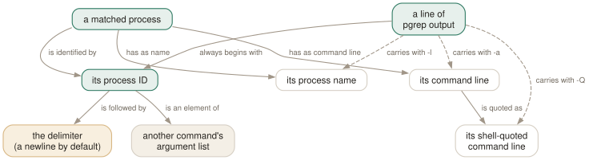

Day 03
Shaping the output
Six renderings of one answer, and only two of them compose.
By the end of today you can
- choose between
-l,-aand-Qby what you are about to do with the output - feed pgrep's result into another command without losing argument boundaries
- predict what a command substitution does when pgrep matches nothing
You are producing an argument list, or a report
pgrep's default output — bare PIDs, one per line — looks minimal because it is aimed at another program, not at you. Every output flag moves it one step towards being readable and one step away from being usable, and the only question worth asking is which end you want.
Here is one selection rendered six ways. The process was started as python3 -c '…' --worker 'shard 3', which will matter in a moment:
$ pgrep -f 'shard 3'
269645
$ pgrep -l -f 'shard 3'
269645 python3
$ pgrep -a -f 'shard 3'
269645 python3 -c import time; time.sleep(400) --worker shard 3
$ pgrep -a -Q -f 'shard 3'
269645 python3 -c 'import time; time.sleep(400)' --worker 'shard 3'
$ pgrep -d, -f 'shard 3'
269645
$ pgrep -c -f 'shard 3'
1

-l tells you less than you think
-l appends the process name. It is the fifteen-character name from yesterday, and it stays the fifteen-character name even when you matched with -f. The two flags are answering different questions — one is about matching, the other about printing — and nothing connects them.
-a prints the full command line instead, which is what you almost always wanted. It is the flag that replaces ps aux | grep outright.
-Q, and the argument boundaries -a throws away
The command line in /proc/PID/cmdline is NUL-separated: the kernel knows exactly where each argument ends. -a discards that, joining everything with single spaces, so a space inside an argument and a space between two arguments print identically.
What -a shows
--worker shard 3
Two arguments, or three? The output cannot say.
What -a -Q shows
--worker 'shard 3'
Two. The quoting is the answer.
-Q shell-quotes each element of the argument vector separately, which makes the output both unambiguous and safe to paste back into a shell. It only affects -a; on its own, or with -l, it changes nothing.
Feeding the result to something else
Bare PIDs separated by newlines are already an argument list, because the shell splits on whitespace. That is the whole of the man page's fourth example:
$ renice +4 $(pgrep chrome)
Commands that want one comma-separated argument instead of many — ps -p is the common one — need -d:
$ ps -fp $(pgrep -d, -x pipewire)
UID PID PPID C STIME TTY TIME CMD
jhrcek 5489 4844 0 06:23 ? 00:01:27 /usr/bin/pipewire
-d replaces the separator between PIDs and nothing else. A trailing newline is still written after the last one, which is usually invisible and occasionally not:
$ pgrep -d, pipewire | xxd
00000000: 3534 3839 2c35 3839 370a 5489,5897.
Which flag wins
The output flags are not orthogonal, and pgrep resolves the conflicts three different ways. It is worth knowing which, because only one of the three tells you anything:
-cbeats everything- Add
-cto any combination and you get a bare number. It silently overrides-l,-aand-d— and it overrides--quiettoo, which is arguably the wrong way round. -abeats-l- Ask for both and you get the command line. No warning; the more informative one wins.
--quietrefuses- Combined with
-lor-ait is a hard error —Cannot use --quiet and -l,--list-name options together, exit2. The one place pgrep tells you that two flags contradict each other.
Today's habit
Split your muscle memory in two. At a prompt, reading, the query ends in -a. In a script, feeding something else, it ends in nothing at all — and the result is captured into a variable before anything is done with it.
Tomorrow the pattern becomes optional: every column of the process table is a criterion in its own right, and some of the best queries have no pattern at all.
# Day 3: for reading - full command line, boundaries intact.
pgrep -a -Q -f 'python3 .*worker'
# Day 3: for scripting - capture first, so an empty result is a branch,
# not a syntax error in whatever came next.
if pids=$(pgrep -A -f 'python3 .*worker'); then renice +4 $pids; fi
New vocabulary
Commands
| Command | Does |
|---|---|
ps -fp $(pgrep -d, -x sshd) | The man page's own idiom: hand a comma list to ps. |
renice +4 $(pgrep chrome) | Word-splitting turns newline-separated PIDs into separate arguments. |
pgrep -a -Q -f worker | List command lines with argument boundaries preserved. |
Options
| Option | Does |
|---|---|
-l, --list-name | Print the process name after the PID. Still the 15-character name, even under -f. |
-a, --list-full | Print the full command line after the PID. |
-Q, --shell-quote | Shell-quote each argument in -a output, so boundaries survive. Undocumented. |
-d, --delimiter | Join the PIDs with this string instead of a newline. A trailing newline is still added. |
Drillsdo these in a real terminal, today
Self-check
Answer out loud first, then unfold.
A deploy script does kill -TERM $(pgrep -f myapp). One morning it fails with kill: not enough arguments and the deploy aborts. What happened, and what is the right shape?
The app was not running, so pgrep printed nothing and exited 1. Command substitution turned that into an empty word list, kill was invoked with no PIDs, and it failed. The paradox is that the script broke precisely because there was nothing to do.
Two shapes avoid it. Branch on pgrep's status first — if pids=$(pgrep -f myapp); then kill -TERM $pids; fi — or stop building the pipeline by hand and use pkill -f myapp, which is Day 7 and does the whole thing atomically.
You run pgrep -l -f 'shard 3' and get 269667 python3. Why does the output not show the string you matched on?
-f and -l answer different questions. -f says what to match against; -l says to print the name. They are independent, so you can match on the command line and still be shown the fifteen-character name, which is exactly as unhelpful as it sounds.
If you matched with -f, print with -a. Treat the two as a pair.
Why is -Q worth knowing when -a already prints the command line?
-a joins the argument vector with single spaces, so a process started with --worker 'shard 3' is printed as --worker shard 3 — three arguments, or two, and nothing in the output tells you which. -Q quotes each element separately and the ambiguity disappears.
This matters most when you are about to reconstruct a command from what you see — restarting a process by hand, filing a bug, or writing the -f pattern that will find it next time. It is also not in pgrep(1) at all; the only mention is in pgrep --help.
Your monitoring script pipes pgrep into wc -l to count processes. A colleague replaces it with pgrep -c. What behaviour changed?
The counts agree, but the failure modes no longer do. pgrep foo | wc -l exits with wc's status, which is 0 whether or not anything matched — the pipeline hides pgrep's answer. pgrep -c foo prints 0 and exits 1.
So the replacement is strictly better, but any set -e in that script will now abort on an empty result where it used to sail through. That is the correct behaviour arriving at an inconvenient moment, which is how most set -e incidents go.
Cheat sheet
pgrep NAME # bare PIDs, one per line, ascending - an argument list
pgrep -l NAME # + the 15-char name (NOT affected by -f)
pgrep -a NAME # + the full command line <- for reading
pgrep -a -Q NAME # + shell-quoted, argument boundaries kept
pgrep -d, NAME # join PIDs with ',' (trailing newline is STILL added)
pgrep -c NAME # just the number - overrides -l, -a, -d and --quiet
#
ps -fp $(pgrep -d, -x sshd) # -d for commands wanting one argument
renice +4 $(pgrep chrome) # newlines split into many arguments
# Both of these FAIL when nothing matches. Capture, then branch.
Everything through Day 03
Commands
| Command | Does |
|---|---|
pgrep sshd | List the PID of every process whose name matches the ERE sshd. |
pgrep -u root sshd | Two criteria, AND-ed: owned by root and named sshd. |
pgrep -u root,daemon | One criterion, OR-ed: owned by root or by daemon. No pattern at all. |
pgrep 'systemd|cron' | One ERE, two alternatives. Two bare patterns would be an error. |
pgrep --version | Print the procps-ng version this course is checked against. |
pgrep -f 'python3 .*worker' | Match the full command line, so the interpreter's arguments count. |
pgrep -x systemd | Only processes named exactly systemd — not systemd-logind. |
pgrep -A -f myscript.sh | Match command lines, but ignore every ancestor of this pgrep. |
cat /proc/PID/comm | The 15-character name pgrep matches by default. |
tr '\0' ' ' < /proc/PID/cmdline | The full command line pgrep matches under -f. |
ps -fp $(pgrep -d, -x sshd) | The man page's own idiom: hand a comma list to ps. |
renice +4 $(pgrep chrome) | Word-splitting turns newline-separated PIDs into separate arguments. |
pgrep -a -Q -f worker | List command lines with argument boundaries preserved. |
Options
| Option | Does |
|---|---|
-c, --count | Print how many processes matched instead of their PIDs. |
--quiet | Print nothing; the exit status is the whole answer. Long form only. |
-f, --full | Match against the whole command line instead of the process name. |
-x, --exact | Require the pattern to match the whole string, not a part of it. |
-i, --ignore-case | Match case-insensitively. |
-A, --ignore-ancestors | Drop every ancestor of this pgrep from the result. The fix for -f in scripts. |
-l, --list-name | Print the process name after the PID. Still the 15-character name, even under -f. |
-a, --list-full | Print the full command line after the PID. |
-Q, --shell-quote | Shell-quote each argument in -a output, so boundaries survive. Undocumented. |
-d, --delimiter | Join the PIDs with this string instead of a newline. A trailing newline is still added. |